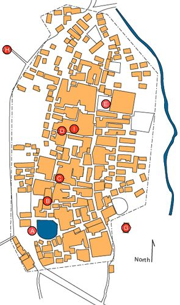

Zhiyan Village
Menu

A
B
C
D
E
G
H
I
A. Half Moon Reservoir, Banyue Tang 半月塘
B. Five Manifestations Cult Temple, Wuxian Miao 五顯廟
C. Lord Yang Temple, Yanggong Miao 羊公廟
D. The Hall of Completing Will, Chengzhi Tang 成志堂
E. The Hall of Continuing Virtue, Yande Tang 衍德堂
"The Receipt from the Hall of Filial Devotion
"Record Pertaining to Donating Fields for Additional Sacrifices
"Contract for fileds from Mr. Hui 133rd
G. The Hall of Succeeding Glory, Chengxian Tang 承顯堂
H. Entrance to the Hall of Promoting Goodness, Jimei Tang 濟美堂
I. The Hall of Filial Devotion, Xiaosi Tang 孝思堂